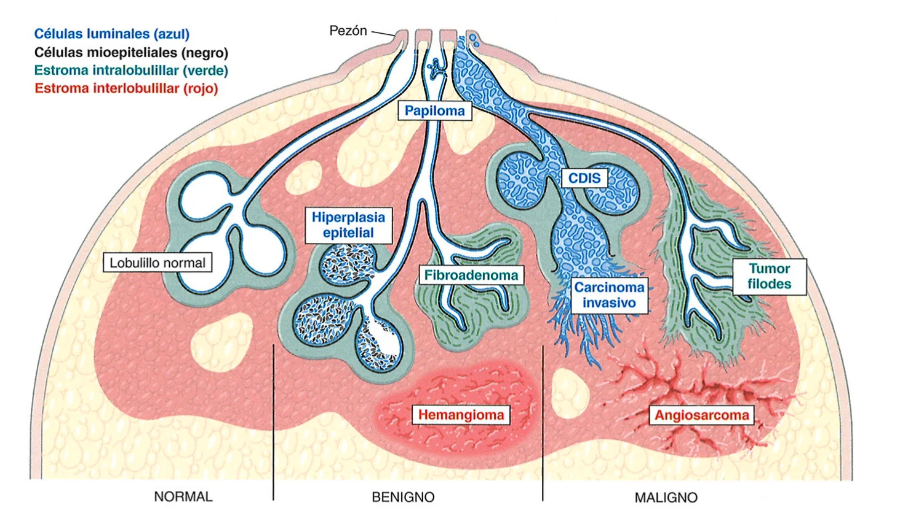
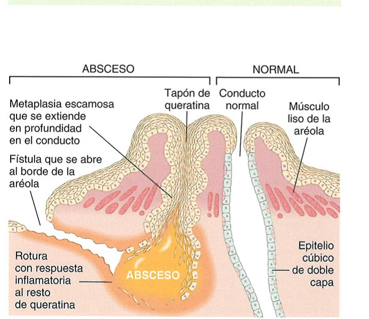
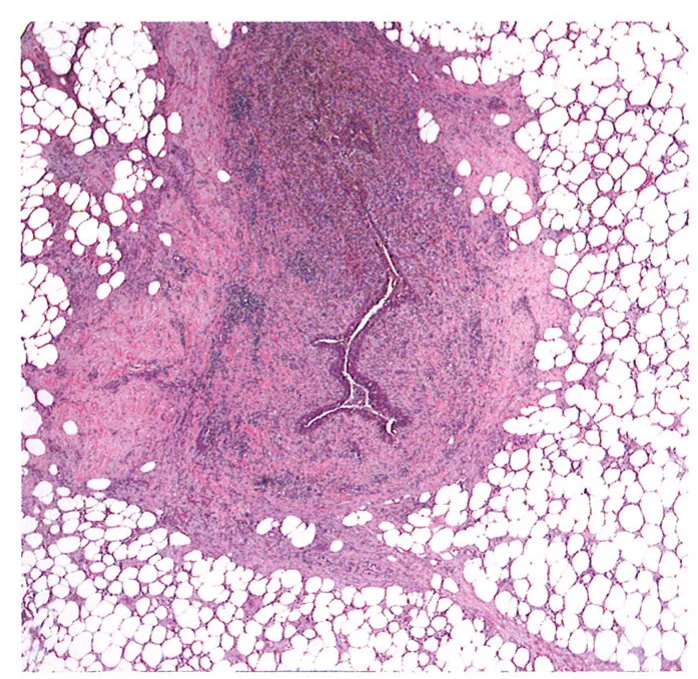
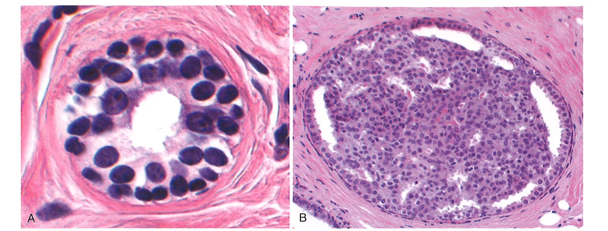
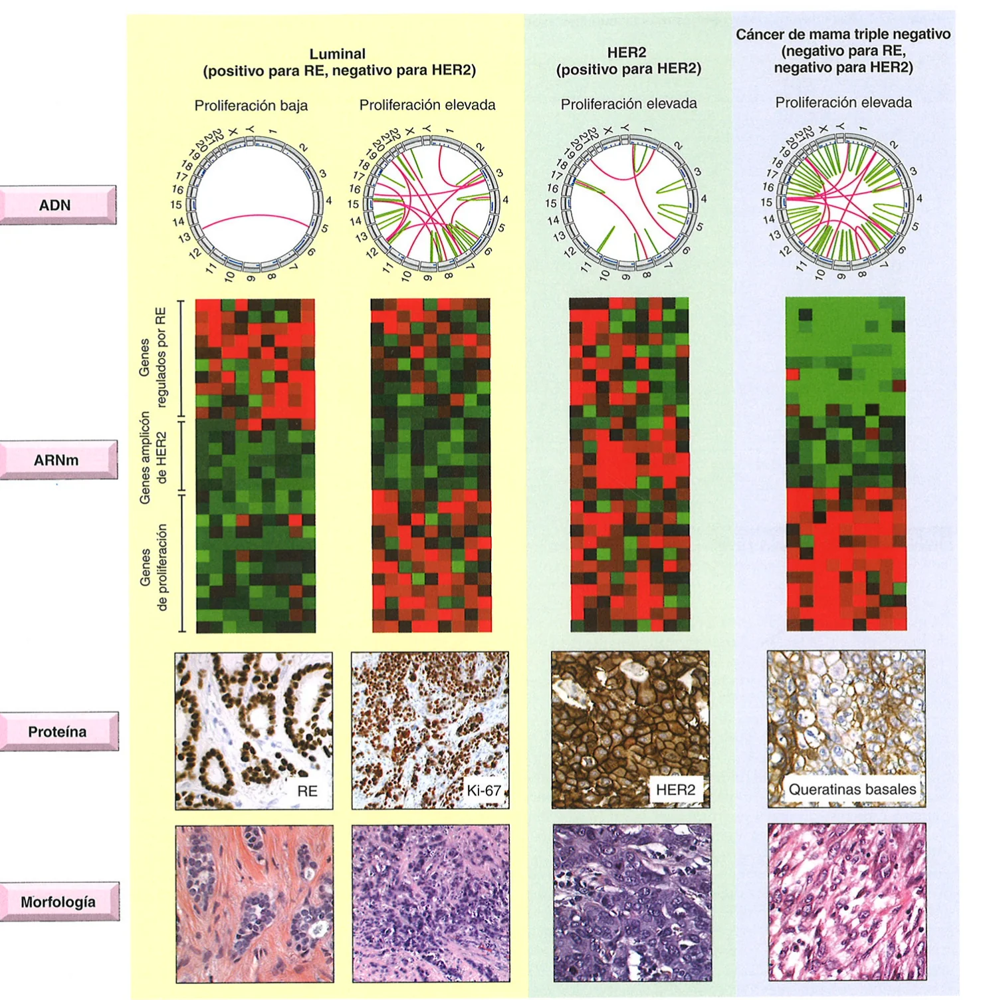
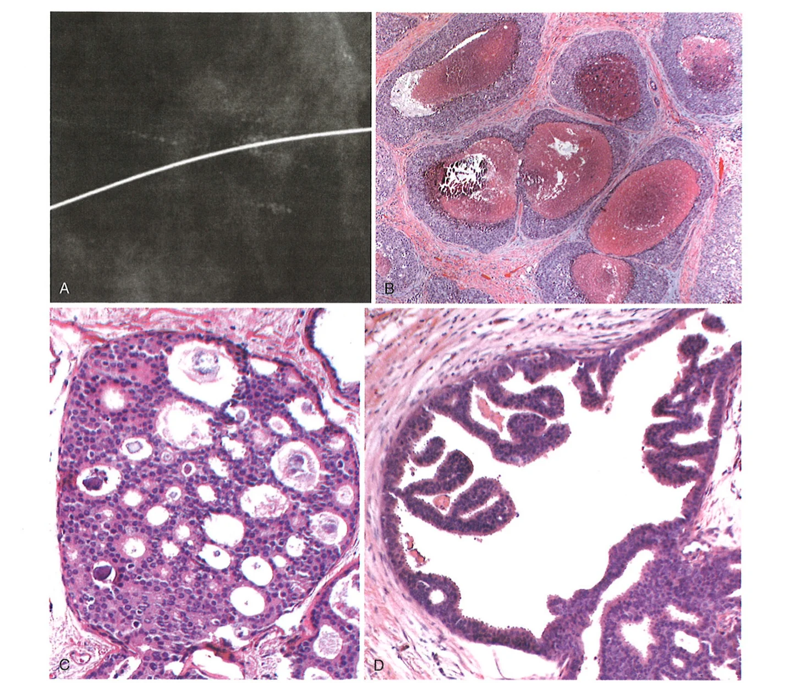
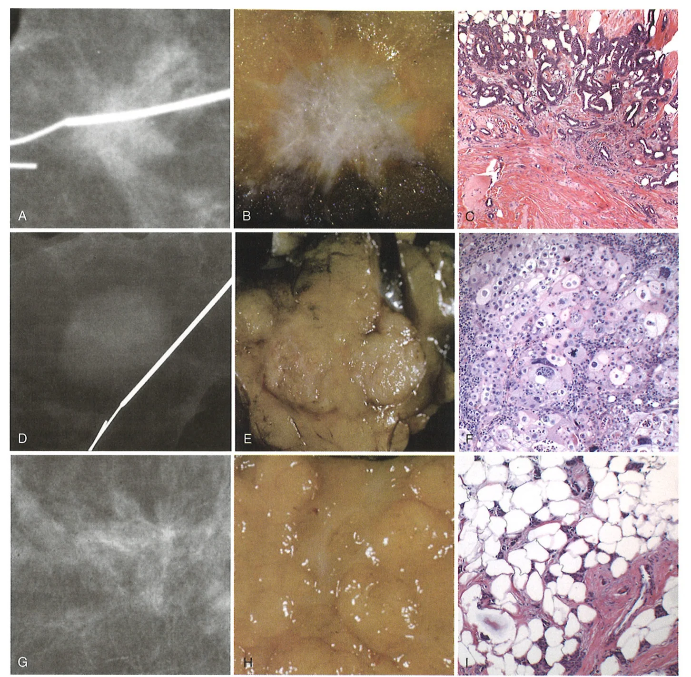
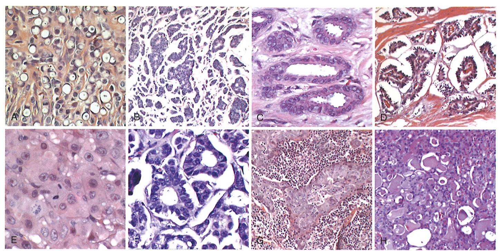

Qué cubre esta guía
Las citas p. N corresponden a la página impresa del libro. El texto se contrastó con el OCR del capítulo.
Lo esencial en 60 segundos
- Las lesiones epiteliales benignas se escalonan por riesgo de carcinoma infiltrante posterior: no proliferativas 1,0, proliferativas sin atipia 1,5-2, con atipia 4-5 y carcinoma in situ 8-10 p. 1045.
- El CDIS se detecta por calcificaciones mamográficas y progresa a carcinoma infiltrante en el mismo cuadrante a ~1% anual; el CLIS es un hallazgo casual bilateral por pérdida de cadherina E sin calcificaciones p. 1053-1055.
- Tres grupos moleculares: luminal (RE+/HER2-, 40-55%, PIK3CA, metástasis óseas y recidiva tardía), HER2 (20%, amplificación 17q, responde a anticuerpos anti-HER2) y TNBC (~15%, TP53, BRCA1, recidiva <8 años con metástasis viscerales y encefálicas) p. 1050-1052.
- El estado de los ganglios axilares es el principal factor pronóstico: supervivencia libre de enfermedad a 10 años de 70-80% si son negativos, 35-40% con 1-3 positivos y 10-15% con más de 10 p. 1059.
- La biopsia de ganglio centinela evita el vaciamiento axilar cuando es negativa, y la 8.ª edición del AJCC integra grado, RE, RP y HER2 en la estadificación pronóstica p. 1059-1060.
- El carcinoma inflamatorio (taponamiento linfovascular dérmico, piel de naranja) imita una infección mamaria y tiene supervivencia a 3 años de solo 3-10% p. 1058, 1060.
Ideas clave
- La mama está formada por unidades lobulillares del conducto terminal (células luminales + mioepiteliales sobre membrana basal) rodeadas de estroma intralobulillar e interlobulillar; casi todas las neoplasias malignas son adenocarcinomas que surgen de la unidad lobulillar del conducto terminal, y los términos "ductal" y "lobulillar" reflejan biología tumoral, no la célula de origen p. 1038, 1053.
- Las presentaciones clínicas de la mastopatía (dolor, inflamación, secreción, masa) se asocian a cáncer en menos del 10% de los casos; en cambio, la secreción del pezón es malignantizante con la edad (7% si <60 años, 30% si ≥60) y una masa palpable es maligna en 10% de menores de 40 años pero 60% de mayores de 50 p. 1039.
- Los trastornos inflamatorios son <1% de los síntomas mamarios; siempre debe descartarse el carcinoma inflamatorio, que imita la inflamación por émbolos tumorales en la vasculatura dérmica p. 1040.
- Las lesiones epiteliales benignas se clasifican por riesgo relativo de carcinoma infiltrante posterior: no proliferativas (1,0), proliferativas sin atipia (1,5-2) y proliferativas con atipia (4-5); el carcinoma in situ eleva el riesgo a 8-10 p. 1045.
- El CDIS es una proliferación clonal limitada por membrana basal, detectada casi siempre por calcificaciones mamográficas; sin tratamiento progresa a carcinoma infiltrante a ~1% anual y su riesgo de recidiva depende de grado nuclear alto con necrosis, extensión y márgenes afectados p. 1053-1055.
- El carcinoma de mama es la neoplasia maligna más frecuente y mortal de la mujer en el mundo (1,7 millones de casos/año); riesgo vital de 1 en 8 en EE. UU.; los factores de riesgo mayores son sexo femenino, edad, exposición estrogénica acumulada y mutaciones germinales de alta penetrancia p. 1046-1047.
- Se reconocen tres grupos moleculares: luminal (RE+/HER2-, 40-55%), HER2 (20%, amplificación de HER2 en 17q en >95%) y triple negativo (TNBC, ~15%, genómica inestable, TP53 mutado en 70-80%, asociado a BRCA1) p. 1050-1051.
- Los cánceres HER2 tienen mal pronóstico espontáneo pero excelente respuesta a anticuerpos anti-HER2 (remisión completa en >50%); el TNBC recidiva casi siempre en los primeros 8 años y metastatiza a vísceras y encéfalo p. 1052-1053.
- El factor pronóstico más importante del carcinoma infiltrante sin metástasis a distancia es la afectación ganglionar axilar (supervivencia libre de enfermedad a 10 años: 70-80% con ganglios negativos, 35-40% con 1-3 positivos, 10-15% con >10); sigue el tamaño tumoral, el grado histológico de Nottingham y la invasión linfovascular p. 1059-1060.
- La biopsia de ganglio centinela (localizado con radiotrazadores o colorantes) evita el vaciamiento axilar completo cuando es negativa p. 1059.
- La 8.ª edición del AJCC incorpora la estadificación pronóstica que combina T, N, M con grado, RE, RP y HER2, además de la anatómica clásica p. 1060.
- Los tumores estromales bifásicos (fibroadenoma y tumor filodes) nacen del estroma intralobulillar y comparten mutaciones somáticas de MED12; solo el componente estromal del filodes metastatiza, por vía hematógena p. 1062-1063.
Anatomía, desarrollo y presentación clínica de la mastopatía
Estructura y cambios vitales
La mama se compone de grandes conductos que drenan los lobulillos formados por unidades lobulillares del conducto terminal, con doble capa celular (luminal y mioepitelial) y estroma especializado intralobulillar; cada estructura puede originar tumores benignos o malignos específicos (papiloma, hiperplasia, CDIS, fibroadenoma, tumor filodes, carcinoma invasivo, hemangioma/angiosarcoma) p. 1038. Tras la menarquia se expande el sistema lobulillar; el embarazo produce cambios permanentes que explican la reducción del riesgo de cáncer en la maternidad temprana. Después de la tercera década los lobulillos y su estroma involucionan y el estroma interlobulillar pasa de fibroso radiodenso a adiposo radiotransparente; las hormonas endógenas (obesidad) o exógenas (terapia de reemplazo hormonal) retrasan esta involución p. 1038.


Trastornos del desarrollo
- Restos de la línea de leche: pezones o mamas supernumerarios por persistencia de engrosamientos epidérmicos desde la axila al periné; rara vez originan patología y suelen manifestarse como tumefacción dolorosa premenstrual p. 1038.
- Tejido mamario axilar accesorio (cola axilar de Spence): extensión del sistema ductal al tejido subcutáneo axilar, que puede no ser extirpado en la mastectomía p. 1038.
- Inversión congénita del pezón: anomalía benigna del desarrollo p. 1038.
Presentaciones clínicas de la mastopatía
- Dolor: el cíclico difuso se debe al edema premenstrual; el no cíclico es focal (quistes rotos, traumatismo, infección o ninguna lesión). ~5% de las masas dolorosas son cánceres p. 1039.
- Inflamación: eritema y edema de toda o parte de la mama, habitualmente infecciosa durante la lactancia; el imitador clave es el carcinoma inflamatorio p. 1039.
- Secreción del pezón: la lechosa (galactorrea) se asocia a hiperprolactinemia (adenoma hipofisario), hipotiroidismo, síndromes anovulatorios o fármacos (anticonceptivos, tricíclicos, metildopa, fenotiacinas); no es un rasgo de malignidad. Las secreciones hemorrágicas o serosas se deben sobre todo a quistes y papilomas de grandes conductos; la asociada a cáncer lo es por CDIS, con origen maligno en 7% de las <60 años y 30% de las ≥60. La secreción espontánea, unilateral y hemorrágica en mujeres mayores es sospechosa de malignidad p. 1039.
- Masa palpable: ~95% benignas (redondeadas, elásticas, móviles, delimitadas; fibroadenomas y quistes); las malignas invaden planos tisulares, son duras (escirrosas) y de bordes irregulares. ~50% de los cánceres se ubican en el cuadrante superoexterno y ~20% en la región central/subareolar p. 1039.
Detección mamográfica
Los signos mamográficos del carcinoma son densidades (masas irregulares; el carcinoma detectado por mamografía mide ~1 cm y solo 15% tiene ganglios positivos) y calcificaciones (benignas si asociadas a quistes apocrinos, fibroadenomas hialinizados o adenosis esclerosante; sospechosas si son pequeñas, irregulares, numerosas y agrupadas, rasgo típico del CDIS) p. 1039-1040. ~10% de los carcinomas invasivos no se ven en mamografía bidimensional (tejido denso, tumor pequeño, crecimiento difuso sin respuesta tisular, cercanía a la pared torácica); complementan la tomosíntesis digital, la ecografía (sólido vs quístico) y la RM (realce por hipervascularización, útil en mamas densas) p. 1040. El beneficio de la detección selectiva es menor del previsto: al diagnóstico 70-80% ya son invasivos, los cánceres más letales (jóvenes, crecimiento rápido entre mamografías) escapan a la detección, y 10-30% de los invasivos detectados son sobrediagnósticos p. 1040.
Trastornos inflamatorios
Las enfermedades inflamatorias de la mama son infrecuentes (<1% de los síntomas mamarios) y causadas por infección, autoinmunidad o reacciones a cuerpo extraño (queratina, secreciones extravasadas); siempre debe descartarse carcinoma inflamatorio en una mama tumefacta y eritematosa p. 1040.
| Trastorno | Clave clínica | Rasgo histológico | Tratamiento |
|---|---|---|---|
| Mastitis aguda | Primer mes de lactancia; grietas del pezón; S. aureus (abscesos) o estreptococos (celulitis) | Inflamación aguda segmentaria o difusa | Antibióticos + extracción continua de leche; drenaje quirúrgico excepcional p. 1040 |
| Metaplasia escamosa de los conductos galactóforos (absceso subareolar recurrente, mastitis periductal, enfermedad de Zuska) | Masa subareolar dolorosa recidivante con fístula; >90% fumadores | Metaplasia escamosa queratinizante profunda del conducto; obstrucción por queratina, rotura e inflamación granulomatosa frente a la queratina | Extirpación en bloque del conducto y el trayecto fistuloso; antibióticos si sobreinfección (anaerobios) p. 1040-1041 |
| Ectasia ductal | Masa periareolar con secreción espesa blanquecina y a veces retracción; 5.ª-6.ª década, multíparas; no ligada al tabaco | Conductos dilatados con secreción espesa y macrófagos espumosos; rotura con inflamación crónica periductal, granulomas y fibrosis que retrae piel y pezón | Clínico; el problema es diferenciarse del carcinoma infiltrante en palpación y mamografía p. 1041 |
| Esteatonecrosis | Masa indolora, engrosamiento o retracción cutánea; ~50% con antecedente de traumatismo o cirugía | Necrosis licuefactiva con neutrófilos y macrófagos, luego células gigantes, calcificaciones, hemosiderina y cicatriz | Clínico; imita al cáncer p. 1041 |
| Mastopatía linfocítica (lobulitis linfocítica esclerosante) | Masas duras únicas o múltiples; frecuente en diabetes tipo 1 y tiroiditis autoinmunitaria | Estroma densamente colagenizado con lobulillos atróficos de membranas basales engrosadas y infiltrado linfocítico | Diferenciación del cáncer p. 1041 |
| Mastitis granulomatosa | Manifestación de enfermedades sistémicas (granulomatosis con poliangeitis, sarcoidosis, tuberculosis) o mastitis lobulillar granulomatosa/mastitis granulomatosa neutrofílica quística (corinebacterias lipófilas) en mujeres que han tenido hijos | Granulomas asociados a lobulillos con vacuolas lipídicas y neutrófilos | Antibióticos y a veces esteroides p. 1041 |
Fuente: p. 1040-1041.




Lesiones epiteliales benignas
Se clasifican en tres grupos con riesgo creciente de carcinoma posterior en cualquiera de las mamas p. 1042.
| Grupo | Lesiones | Riesgo relativo (riesgo vital) |
|---|---|---|
| No proliferativas (cambios fibroquísticos) | Hiperplasia leve, ectasia ductal, quistes, metaplasia apocrina, adenosis, fibroadenoma sin características complejas | 1,0 (3%) |
| Proliferativa sin atipia | Hiperplasia moderada o florida, adenosis esclerosante, lesión esclerosante compleja, fibroadenoma complejo | 1,5-2 (5-7%) |
| Proliferativa con atipia | Hiperplasia ductal atípica, hiperplasia lobulillar atípica | 4-5 (13-17%) |
| Carcinoma in situ | CLIS, CDIS | 8-10 (25-30%) |
Fuente: p. 1045 (tabla 23.1).
Cambios no proliferativos (cambios fibroquísticos)
No se asocian a mayor riesgo de cáncer. Tres patrones: p. 1042.
- Quistes: dilatación y fusión de lobulillos; contenido turbio marrón-azulado (quistes de cúpula azul); revestimiento metaplásico apocrino (citoplasma eosinófilo granular) con calcificaciones frecuentes. Si un quiste solitario y duro desaparece tras aspiración con aguja fina, el diagnóstico queda confirmado p. 1042.
- Fibrosis: los quistes se rompen y liberan secreción al estroma, con inflamación crónica y fibrosis que producen nodularidad palpable p. 1042.
- Adenosis: aumento del número de ácinos por lobulillo; normal en el embarazo, focal en no embarazadas p. 1042.
Otros cambios no proliferativos: el adenoma de la lactancia (masa en embarazadas/lactantes que remite al cesar la lactancia; posiblemente hiperplasia reactiva y no neoplasia) y la atipia epitelial plana (proceso clonal de ácinos dilatados con atipia leve, delección de 16q, lesión clonal más temprana reconocible; no demostrado que aumente el riesgo de forma aislada) p. 1042.
Mastopatía proliferativa sin atipia
Pequeño aumento de riesgo en ambas mamas; se comportan como marcadores de riesgo, no precursores directos: p. 1042-1043.
- Hiperplasia epitelial: células luminales y mioepiteliales llenan y distienden conductos y lobulillos, con luces irregulares periféricas; hallazgo casual p. 1043.
- Adenosis esclerosante: ácinos comprimidos y distorsionados por fibrosis, con cordones sólidos que imitan al carcinoma infiltrante; los ácinos giran en remolino y el margen es bien delimitado, lo que la diferencia del carcinoma; puede presentarse como masa, densidad o calcificaciones p. 1043.
- Lesión esclerosante compleja: adenosis esclerosante + papiloma + hiperplasia. La cicatriz radial (lesión esclerosante radial) imita al carcinoma infiltrante en imagen, macroscopía e histología: nido central de túbulos atrapados en estroma hialinizado con proyecciones radiadas p. 1043-1044.
- Papiloma: ejes fibrovasculares ramificados dentro de un conducto dilatado, con células luminales y mioepiteliales. Los de grandes conductos (solitarios, senos galactóforos) producen secreción por el pezón en >80%, a veces hemorrágica por torsión e infarto del eje; los de conductos pequeños son múltiples, profundos y se manifiestan como masa, densidad o calcificaciones p. 1043.


Mastopatía proliferativa con atipia
La hiperplasia atípica es una proliferación clonal con algunas pero no todas las características del carcinoma in situ; riesgo moderadamente aumentado p. 1044.
- Hiperplasia ductal atípica: histología parecida al CDIS (proliferación monomorfa con espacios cribiformes) pero que solo llena parcialmente los conductos; presente en 5-17% de las biopsias por calcificaciones p. 1044-1045.
- Hiperplasia lobulillar atípica: células idénticas al CLIS que no llenan ni distienden más del 50% de los ácinos de un lobulillo; hallazgo casual, <5% de las biopsias p. 1044-1045.
- Ambas expresan alto RE, tienen baja proliferación y comparten anomalías con el carcinoma luminal bien diferenciado (pérdidas de 16q y 17p, ganancia de 1q); la hiperplasia lobulillar atípica además pierde cadherina E, como el CLIS p. 1045.
- Menos del 20% de las mujeres con hiperplasia atípica llega a tener cáncer: la mayoría opta por vigilancia clínica y radiológica en vez de cirugía o tamoxifeno p. 1045.
Carcinoma de mama: incidencia, factores de riesgo y clasificación molecular
Incidencia y epidemiología
Neoplasia maligna más frecuente y mortal de la mujer en el mundo: 1,7 millones de casos/año y una de cada tres pacientes muere; el riesgo vital es de 1 en 8 en EE. UU. (más de 260.000 casos infiltrantes y más de 40.000 muertes en 2019, solo superado por el cáncer de pulmón) p. 1046. La incidencia de TNBC y HER2 se estabiliza en la mediana edad, mientras la del cáncer luminal sigue subiendo; por eso TNBC y HER2 son casi la mitad de los cánceres en mujeres jóvenes y <20% en mayores p. 1046. Por etnia: ascendencia europea tiene la mayor incidencia (edad media de diagnóstico 63 años; solo 20% antes de los 50), mientras que en ascendencia africana la edad media es 59 años (35% antes de los 50) con más cánceres de gran malignidad (TNBC) y la mortalidad más alta p. 1046. La mortalidad ha bajado 1-2% anual y hoy es ~20%, atribuido a la detección mamográfica y a mejores tratamientos p. 1046.
Factores de riesgo
| Riesgo relativo | Factores |
|---|---|
| >4 | Sexo femenino, aumento de la edad, mutaciones germinales de elevada penetrancia, claros antecedentes familiares (>1 pariente de primer grado, edad joven, múltiples cánceres), antecedente personal de cáncer de mama, alta densidad mamaria |
| 2,1-4 | Mutaciones germinales de moderada penetrancia, radiación torácica de dosis alta a edad temprana, antecedente de 1 pariente de primer grado |
| 1,1-2 | Menarquia <12 años, menopausia >55 años, primer embarazo >35 años, nuliparidad, ausencia de lactancia materna, tratamiento hormonal exógeno, obesidad posmenopáusica, inactividad física, alcohol |
Fuente: p. 1047 (tabla 23.2).
Protegen el embarazo temprano (<20 años) y la lactancia prolongada; la mastectomía profiláctica bilateral reduce el riesgo ~90% y los antagonistas de RE reducen los cánceres RE+ p. 1047.
Clasificación molecular
Tres grupos principales, definidos clínicamente por RE y HER2, con buena correlación con el perfil de expresión génica: p. 1046-1048.


| Característica | Luminal (RE+/HER2-) | HER2 (sobreexpresa HER2) | TNBC (RE-/HER2-) |
|---|---|---|---|
| % de cánceres | 40-55% (proliferación baja a moderada) | 20% | 15% |
| Perfil de ARNm | Luminal A y luminal B | Enriquecido con HER2 | Basaloide (si RE-), luminal B (si RE+) |
| Genética | PIK3CA 45%, TP53 12%; pérdidas de 16q, ganancias de 1q | PIK3CA 29%, TP53 29%; amplificación de HER2 | PIK3CA 9%, TP53 70-80%; inestabilidad genómica |
| Tipos histológicos especiales | Tubular, lobulillar grado 1-2, mucinoso, papilar | Algunos apocrinos y micropapilares | Medulares, metaplásicos |
| Pacientes típicas | Mujeres mayores, hombres, portadoras de BRCA2, detectados por cribado | Jóvenes, portadoras de TP53 germinales | Jóvenes, de origen africano, portadoras de BRCA1 |
| Respuesta completa a quimioterapia | 10% | 30% | <10% |
| Metástasis | Hueso (70-80%) > vísceras > encéfalo | Hueso (40%), vísceras (45%), encéfalo (30%) | Hueso (70%), vísceras (25-35%), encéfalo (10-30%) |
| Recidiva | Baja por muchos años, recidiva tardía posible | Bimodal, picos temprano y tardío (~10 años) | Máximo a <8 años; tras 10 años el paciente probablemente está curado |
Fuente: p. 1050 (tabla 23.4).
Patogenia hereditaria
Entre un cuarto y un tercio de los cánceres son familiares; las mutaciones monogénicas de penetrancia moderada a alta explican 8-17% de los carcinomas p. 1047.
- BRCA1 (17q21) y BRCA2 (13q12.3): 80-90% de los cánceres familiares monogénicos y 3-6% de todos; herencia autosómica dominante; reparan roturas de doble cadena del ADN por recombinación homóloga. BRCA1: cáncer mamario 40-90% hasta los 70 años, ovárico 20-40%, mayoría TNBC. BRCA2: mamario 30-60%, ovárico 10-20%, mayor asociación con cáncer de mama masculino; mayoría RE+ p. 1047.
- Otros genes de alta penetrancia: TP53 (Li-Fraumeni, más frecuente en cánceres HER2), PTEN (Cowden), STK11 (Peutz-Jeghers), CDH1 (carcinoma gástrico difuso hereditario + carcinoma lobulillar), PALB2 p. 1049.
- Moderada penetrancia (riesgo 2-4 veces): ATM y CHEK2, también implicados en la reparación del ADN p. 1049.
Patogenia esporádica y vías de carcinogénesis
Tres vías principales (fig. 23.14): p. 1050.
- Vía luminal (la más frecuente): atipia epitelial plana e hiperplasia ductal/lobulillar atípica como precursores no obligados, con ganancias de 1q, pérdidas de 16q y mutaciones activadoras de PIK3CA; pocos casos progresan p. 1051.
- Vía HER2: asociada a amplificación de HER2 en 17q; sin lesión precursora definitiva identificada p. 1050.
- Vía triple negativa: posible precursor de células lobulillares RE-/p53+ (semejante al carcinoma intraepitelial seroso tubárico de portadoras de BRCA1); TP53 es el único gen mutado en la mayoría; BRCA1 silenciado epigenéticamente en los esporádicos p. 1052.
Carcinoma in situ
Células cancerosas encerradas por la membrana basal dentro de conductos y lobulillos, sin acceso a vasos sanguíneos ni linfáticos; comparte casi todos los cambios moleculares del carcinoma infiltrante p. 1053.
Carcinoma ductal in situ (CDIS)
- Proliferación clonal limitada por membrana basal, con células mioepiteliales conservadas aunque reducidas; puede extenderse por todo el sistema ductal en un sector de la mama p. 1053.
- Detectado casi siempre por mamografía (calcificaciones por secreción o necrosis); sin cribado, <5% de los carcinomas son in situ, cifra que sube a 15-30% en poblaciones cribadas p. 1053.
- Patrones arquitecturales (frecuentemente mezclados): p. 1053.
- Comedoniano: núcleos polimorfos de gran malignidad y necrosis central; calcificaciones lineales y ramificadas en la radiografía de la pieza p. 1053-1054.
- Cribiforme: espacios redondeados regulares "en molde" con material secretor calcificado p. 1054.
- Micropapilar: proyecciones bulbosas sin ejes fibrovasculares p. 1054.
- Papilar: papilas verdaderas con eje fibrovascular sin capa mioepitelial p. 1054.

Figura 23.17. CDIS en sus patrones comedoniano (calcificaciones lineales y necrosis central), cribiforme y micropapilar. Robbins y Cotran, Patología estructural y funcional, 10ª ed., Elsevier España, 2021, p. 1054. Ver créditos - Enfermedad de Paget del pezón (1-4% de los cánceres): erupción eritematosa unilateral con costra descamativa y prurito, a menudo confundida con eccema; las células de Paget migran desde el CDIS por los senos galactóforos hasta la epidermis sin romper la membrana basal. Con masa palpable (50-60% de los casos), casi siempre hay carcinoma infiltrante, generalmente RE-/HER2+; sin masa, solo CDIS. El pronóstico depende del carcinoma subyacente p. 1054.
- Historia natural y tratamiento: sin tratamiento, progresión a carcinoma infiltrante en el mismo cuadrante a ~1% anual con perfil RE/HER2 semejante. La mastectomía cura en >95%; la cirugía conservadora con radiación es adecuada para la mayoría, con leve aumento de recidiva (mitad CDIS, mitad infiltrante). Factores de recidiva: alto grado nuclear con necrosis, extensión de la enfermedad y márgenes afectados; la radioterapia y el tamoxifeno la reducen. La muerte por cáncer metastásico ocurre en 1-3% p. 1054-1055.

Carcinoma lobulillar in situ (CLIS)
- Proliferación clonal de células poco cohesivas por disfunción de cadherina E (CDH1), proteína supresora tumoral de la cohesión epitelial; hallazgo casual (1-6% de los carcinomas in situ) porque no produce calcificaciones ni densidades p. 1055.
- Bilateral en 20-40% cuando se biopsian ambas mamas (CDIS 10-20%) p. 1055.
- Morfología: células monomorfas pequeñas y redondas que llenan y expanden los ácinos conservando la arquitectura lobulillar, con células en anillo de sello mucinosas, diseminación pagetoide por los conductos y sin necrosis; expresan RE y RP, HER2 negativo, y son negativos para cadherina E por inmunoperoxidasa p. 1055-1056.
- Factor de riesgo bilateral (~1% anual de carcinoma infiltrante, mayor en la mama homolateral); no está claro que su extirpación reduzca el riesgo. Tratamiento: mastectomía profiláctica bilateral, tamoxifeno o vigilancia estrecha. Los carcinomas posteriores tienen 3 veces más probabilidad de ser lobulillares, aunque la mayoría son de otra morfología p. 1055.
Carcinoma infiltrante (invasivo)
Carcinoma ductal infiltrante no especificado de otro modo
- La mayoría son adenocarcinomas ductales sin tipo especial; sin cribado se presentan como masa de ≥2-3 cm, radiodensa, irregular y dura por reacción desmoplásica (el corte produce un sonido chirriante por el estroma blanco calcáreo). Puede fijarse a la pared torácica, retraer la piel (hoyuelos) o el pezón p. 1055-1056.
- Pueden debutar como metástasis axilar o a distancia con primario oculto (detectable por ecografía o RM), sobre todo si no generan desmoplasia p. 1056.
- Gradación de Nottingham: puntuación por formación de túbulos, pleomorfismo nuclear y tasa mitótica. Grado I: patrón tubular/cribiforme, núcleos uniformes, mitosis escasas; grado 2: agrupaciones sólidas, mayor pleomorfismo y mitosis ocasionales; grado 3: sábanas sólidas irregulares, núcleos pleomórficos grandes, alta proliferación y necrosis p. 1056.


Tipos histológicos especiales
Los tipos histológicos especiales a menudo albergan anomalías genéticas peculiares y comportamientos que rompen las reglas de los carcinomas ductales no clasificados de otro modo p. 1056.


| Tipo | Morfología | Grupo molecular / comentarios |
|---|---|---|
| Lobulillar | Células infiltrantes no cohesivas, a menudo en anillo de sello con mucina intracitoplásmica, sin túbulos, con mínima desmoplasia | Luminal; pérdida bialélica de CDH1; metastatiza a peritoneo, retroperitoneo, leptomeninges, tubo digestivo y ovario/útero; mutaciones germinales de CDH1 elevan además el riesgo de carcinoma gástrico en anillo de sello p. 1056-1057 |
| Mucinoso (coloide) | Grupos celulares en lagos de mucina; masa blanda gelatinosa | Luminal; favorable p. 1057 |
| Tubular | Solo túbulos bien formados; se confunde con lesión esclerosante benigna | Luminal; muy favorable p. 1057, 1059 |
| Papilar | Papilas verdaderas con eje fibrovascular revestido de células tumorales | Luminal p. 1057-1058 |
| Apocrino | Células grandes con núcleo redondo, nucléolo prominente y citoplasma eosinófilo granular | Algunos HER2 p. 1058 |
| Micropapilar | Bolas huecas de células flotando en espacios "a sello" | Agresivo p. 1058 |
| Patrón medular | Láminas sólidas de células grandes con infiltrado linfoplasmocítico y borde compresivo; CDIS mínimo | TNBC; >50% de los cánceres BRCA1 tienen este aspecto; hipermetilación del promotor de BRCA1 en 67%; mejor pronóstico, con muchos linfocitos T infiltrantes p. 1056, 1058 |
| Metaplásico | Células fusiformes y productoras de matriz; perfil mioepitelial | TNBC p. 1058 |
| Secretor, adenoescamoso bien diferenciado, adenoideo quístico | Espacios dilatados con material eosinófilo (secretor) | TNBC infrecuentes con pronóstico favorable; el secretor rara vez metastatiza p. 1058 |
| Inflamatorio | Taponamiento de los espacios linfovasculares dérmicos; eritema, tumefacción y piel de naranja por los ligamentos de Cooper; sin masa definida | No molecular definido; supervivencia a 3 años de 3-10%; 1-5% de los cánceres, más frecuente en mujeres jóvenes y de origen africano p. 1058, 1060 |
Fuente: p. 1058-1059 (texto y tabla 23.5).
Factores pronósticos y predictivos
El pronóstico depende de la biología tumoral y del estadio; las metástasis a distancia (5% al diagnóstico) y el carcinoma inflamatorio (1-5%) tienen el peor pronóstico p. 1058.
| Factor | Comentario |
|---|---|
| Metástasis a distancia (M) | El factor pronóstico más importante |
| Ganglios linfáticos regionales (N) | Segundo factor más importante; supervivencia libre de enfermedad a 10 años: 70-80% (N0), 35-40% (1-3 positivos), 10-15% (>10 positivos) |
| Tamaño (T) | <1 cm: supervivencia a 10 años >90%; >2 cm: 77% |
| Enfermedad localmente avanzada | Invasión cutánea o del músculo esquelético; control local difícil |
| Invasión linfovascular | Células tumorales en espacios vasculares en ~50% de los carcinomas; mal pronóstico y recidiva local |
| Carcinoma inflamatorio | Supervivencia a 3 años 3-10% |
| Grado histológico | Nottingham; la supervivencia cae con el grado |
| RE, RP y HER2 | Mejor combinación: RE+/RP+/HER2-; peor: triple negativo |
| Tipos histológicos especiales | Tubular y adenoideo quístico: supervivencia muy favorable |
| Respuesta a quimioterapia prequirúrgica | Respuesta patológica completa en >un tercio de TNBC y HER2 (mejor pronóstico); rara en luminales |
| Perfil de expresión génica | Su mayor valor es evitar quimioterapia en luminales de crecimiento lento sensibles a antiestrógenos |
Fuente: p. 1059-1060 (tabla 23.5 y texto).
- La biopsia ganglionar es imprescindible: la evaluación clínica falla por falsos positivos (ganglios reactivos) y falsos negativos (micrometástasis). La extirpación de ganglios afectados no reduce el riesgo metastásico futuro; es marcador, no causa p. 1059.
- Ganglio centinela: uno o dos primeros ganglios de drenaje, localizados con radiotrazadores o colorantes; biopsia negativa evita el vaciamiento axilar completo p. 1059.
- El 10-20% de las mujeres N0 recidiva a distancia (drenaje a ganglios mamarios internos o vía hematógena) p. 1059.
- Estadificación AJCC 8.ª edición: estadio 0 (CDIS) supervivencia a 10 años 97%; estadio I (invasivo ≤2 cm, N0) 87%; estadio II (>2 cm o 1-3 ganglios positivos) 65%; estadio III (>5 cm, ≥4 ganglios positivos o afectación cutánea/pared torácica/carcinoma inflamatorio) 40%; estadio IV (metástasis a distancia) 5%. La estadificación pronóstica integra grado, RE, RP y HER2 con T, N, M (el TNBC se "aumenta de estadio") p. 1060.
- Tratamiento dirigido (tabla 23.7): RE (ovariectomía/inhibidores de la aromatasa, tamoxifeno, fulvestrant), cinasas dependientes de ciclina CDK4/6 (palbociclib, abemaciclib, ribociclib), HER2 (anticuerpos, conjugado anticuerpo-fármaco, inhibidores de tirosina cinasa, vacunas), anomalías en reparación por recombinación homóloga (sustancias de platino, inhibidores de PARP en BRCA1/2), vía PI3K/AKT/mTOR (>80% de los cánceres con alteraciones en la vía) y puntos de control inmunitarios (anti-PD-1/PD-L1; en investigación en TNBC) p. 1061.
Mama masculina
- Ginecomastia: la única lesión benigna frecuente de la mama masculina; hipertrofia subareolar en botón, unilateral o bilateral, con aumento de conductos y estroma colágeno denso sin formación de lobulillos. Causa: desequilibrio estrógenos/andrógenos; la causa más importante es la cirrosis hepática (menor metabolismo de estrógenos); también edad avanzada, fármacos (alcohol, marihuana, heroína, antirretrovirales, esteroides anabolizantes), síndrome de Klinefelter (XXY) y tumores testiculares funcionantes (Leydig, Sertoli) p. 1044.
- Cáncer de mama masculino: 1% de la incidencia femenina (riesgo vital 0,11%); factores de riesgo similares a las mujeres, con BRCA2 como factor familiar principal (6% de portadores masculinos; 4-40% de los pacientes). Más del 90% son luminales; TNBC y HER2 son <5% p. 1061.
- Se presenta como masa subareolar palpable de 2-3 cm y/o secreción; por la escasez de tejido, invade tempranamente piel y pared torácica; afectación ganglionar axilar en ~50% al diagnóstico y metástasis a pulmón, encéfalo, huesos e hígado. El pronóstico emparejado por estadio es similar al de la mujer; tratamiento con mastectomía y linfoadenectomía axilar y las mismas pautas sistémicas p. 1061.
Tumores estromales
- Bifásicos (estroma intralobulillar neoplásico + componente epitelial reactivo estimulado por factores de crecimiento estromales): fibroadenoma y tumor filodes; ambos con mutaciones somáticas de MED12 (dos tercios de los fibroadenomas), el mismo gen del leiomioma uterino p. 1062.
- El estroma interlobulillar origina lipomas, angiosarcomas, miofibroblastoma y tumores fibrosos, sin componente epitelial p. 1062.
Fibroadenoma
- Tumor benigno más frecuente de la mama femenina; mujeres de 20-30 años, a menudo múltiples y bilaterales p. 1062.
- Morfología: masa elástica, blanquecina, bien delimitada (radiodensa por ausencia de grasa) con hendiduras revestidas por epitelio; estroma mixoide semejante al intralobulillar con patrones pericanalicular (rodea) o intracanalicular (comprime y distorsiona); en mayores, estroma hialinizado y epitelio atrófico p. 1062.
- Hormonosensible: crece en el embarazo (con infarto que puede simular carcinoma) e involuciona tras la menopausia; la ciclosporina A postrasplante renal produce fibroadenomas múltiples bilaterales reversibles p. 1062.
- Riesgo levemente mayor de carcinoma, sobre todo si es "complejo" (quistes >0,3 cm, adenosis esclerosante, calcificaciones epiteliales o cambio apocrino papilar), aunque el riesgo real puede deberse a lesiones asociadas del tejido circundante (p. ej., hiperplasia atípica) p. 1062.
Tumor filodes
- Mucho menos frecuente; se origina también del estroma intralobulillar; mayoría con mutaciones de MED12; las formas malignas suman mutaciones de TERT y otros genes p. 1062.
- Morfología: masas de pocos centímetros hasta sustituir toda la mama, con protuberancias bulbosas ("filodes" = en forma de hoja) que pueden protruir en espacios quísticos; se distingue del fibroadenoma por mayor celularidad, tasa mitótica, pleomorfismo, proliferación estromal y bordes infiltrantes p. 1063.
- Clínica: pico en la sexta década (10-20 años después del fibroadenoma). Las lesiones benignas recidivan localmente sin metastatizar; las de bajo grado y malignas recidivan salvo extirpación amplia o mastectomía; la diseminación linfática es infrecuente y el vaciamiento axilar está contraindicado. Un tercio de las anaplásicas da metástasis hematógenas y solo metastatiza el componente estromal p. 1063.
Puntos de examen
- Priorizar la distinción CDIS vs CLIS: CDIS con calcificaciones mamográficas, patrones comedoniano/cribiforme/micropapilar/papilar, riesgo ipsilateral; CLIS hallazgo casual, poco cohesivo por pérdida de cadherina E, bilateral, sin calcificaciones p. 1053-1055.
- Memorizar la tabla 23.1 de riesgo: no proliferativas 1,0; proliferativas sin atipia 1,5-2; con atipia 4-5; carcinoma in situ 8-10 p. 1045.
- Los tres grupos moleculares con sus porcentajes (luminal 40-55%, HER2 20%, TNBC 15%), su genética (PIK3CA, amplificación de HER2, TP53) y patrones de recidiva (luminal tardía sostenida; TNBC <8 años; HER2 bimodal) p. 1050-1051.
- HER2: amplificación en 17q en >95% de los positivos; diagnóstico por IHQ o hibridación in situ; anticuerpos anti-HER2 logran remisión completa en más de la mitad p. 1052.
- Orden de factores pronósticos: metástasis a distancia, ganglios axilares, tamaño; los números de supervivencia a 10 años por estadio ganglionar y por estadio AJCC (97/87/65/40/5) p. 1059-1060.
- Imitadores benignos de carcinoma: adenosis esclerosante, cicatriz radial, ectasia ductal, esteatonecrosis, tumor filodes; y el carcinoma inflamatorio como imitador maligno de una infección mamaria p. 1041, 1043, 1058.
- Genética hereditaria: BRCA1→TNBC y cáncer ovárico; BRCA2→RE+ y cáncer de mama masculino; CDH1→lobulillar y gástrico difuso; TP53→HER2; moderada penetrancia ATM y CHEK2 p. 1047, 1049.
- MED12 como mutación compartida por fibroadenoma, tumor filodes y leiomioma uterino p. 1062.
Figuras del capítulo
Toca una miniatura para volver a la figura en su sección.